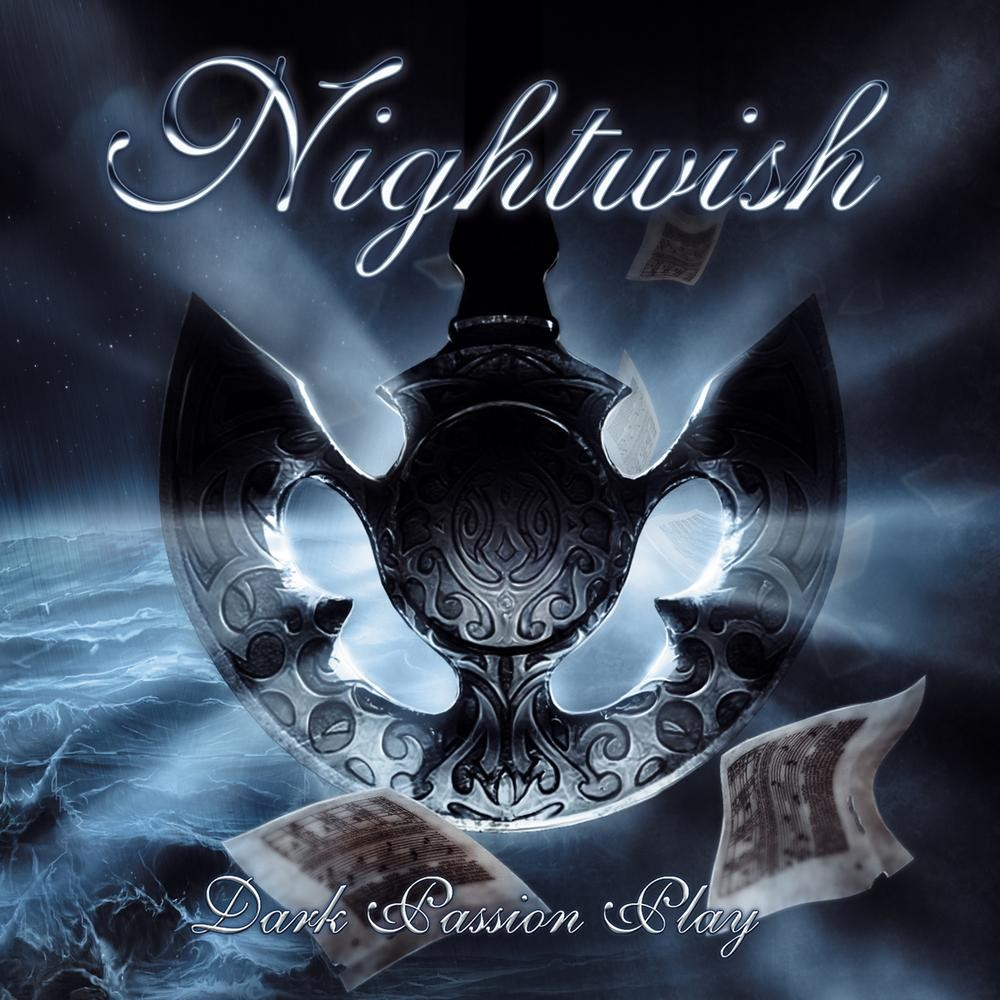

|
 |
 |
 |
 |
| Angels Fall First (1996) |
Wishmaster (2000) |
Dark Passion Play (2007) |
Imaginaerum (2011) |
Endless Forms Most Beautiful (2015) |
| «Beauty and the Beast» |
«She Is My Sin» |
«The Poet and the Pendulum» |
«Taikatalvi» |
«Shudder Before the Beautiful» |
| «The Carpenter» |
«The Kinslayer» |
«Bye Bye Beautiful» |
«Storytime» |
«Weak Fantasy» |
| «Astral Romance» |
«Come Cover Me» |
«Amaranth» |
«Ghost River» |
«Élan» |
| «Angels Fall First» |
«Wanderlust» |
«Cadence of Her Last Breath» |
«Slow, Love, Slow» |
«Yours Is an Empty Hope» |
| «Tutankhamen» |
«Two for Tragedy» |
«Master Passion Greed» |
«I Want My Tears Back» |
«Our Decades in the Sun» |
«Nymphomaniac Fantasia» |
«Wishmaster» |
«Eva» |
«Scaretale» |
«My Walden» |
«Know Why the Nightingale Sings» |
«Bare Grace Misery» |
«Sahara» |
«Arabesque» |
«Endless Forms Most Beautiful» |
«Lappi (Lapland)» |
«Crownless» |
«Whoever Brings the Night» |
«Turn Loose the Mermaids» |
«Edema Ruh» |
«Once Upon a Troubadour» |
«Deep Silent Complete» |
«For the Heart I Once Had» |
|
«Alpenglow» |
«A Return to the Sea» |
«Dead Boy’s Poem» |
«The Islander» |
|
«The Eyes of Sharbat Gula» |
|
«FantasMic» |
«Meadows of Heaven» |
|
«The Greatest Show on Earth» |